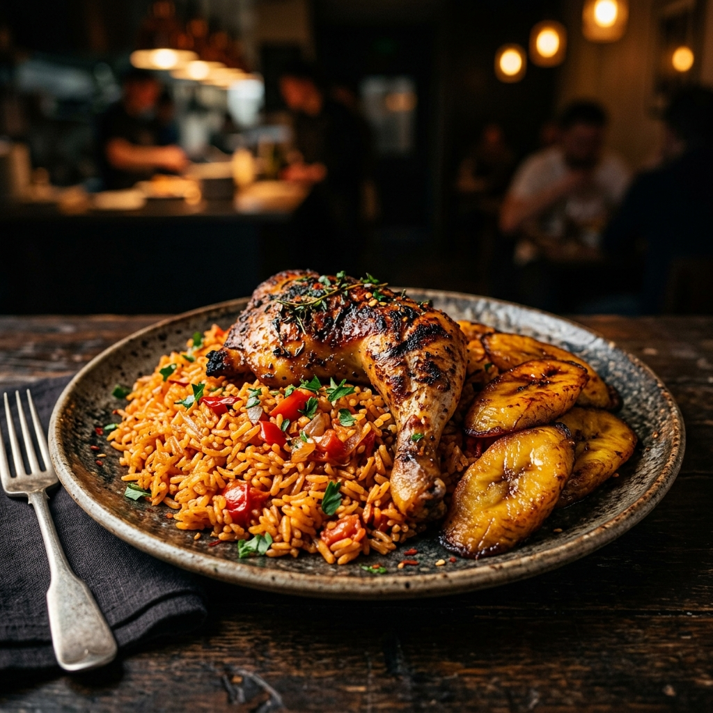
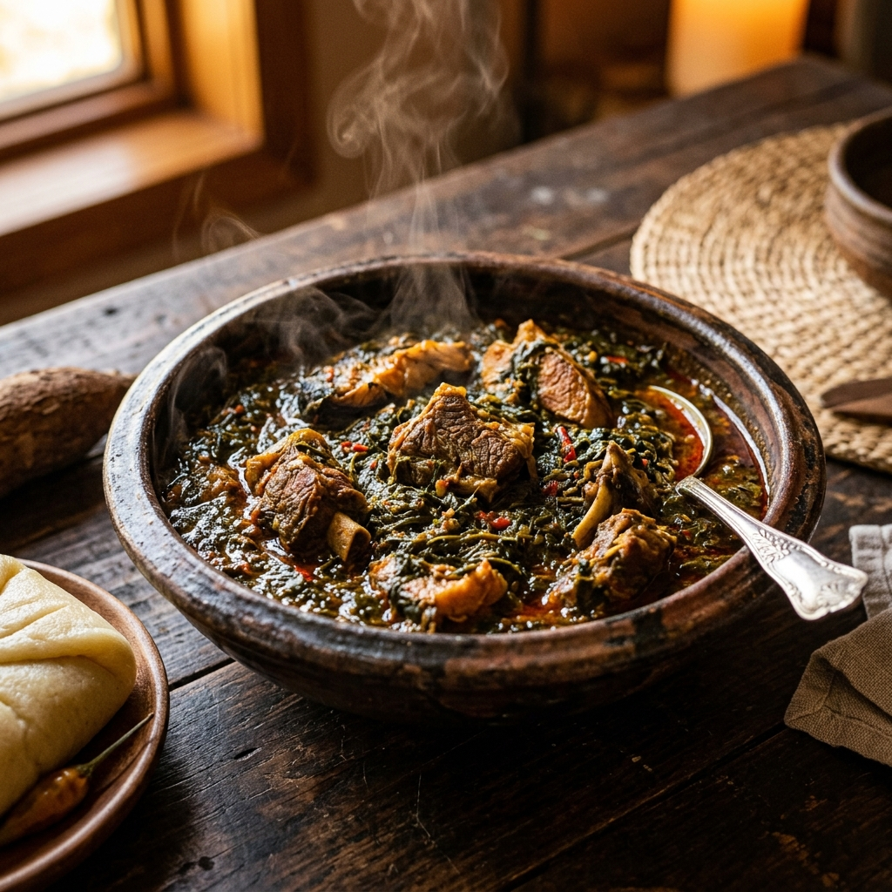
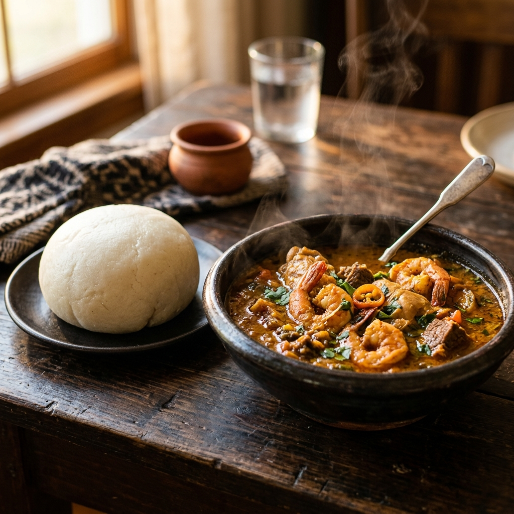
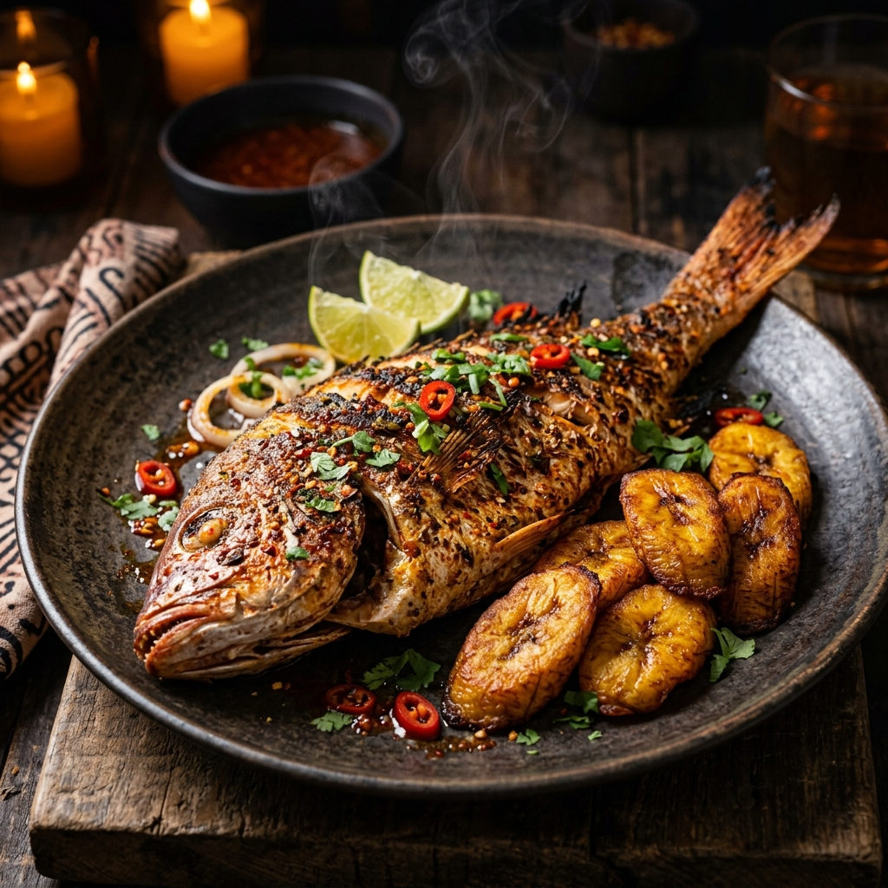
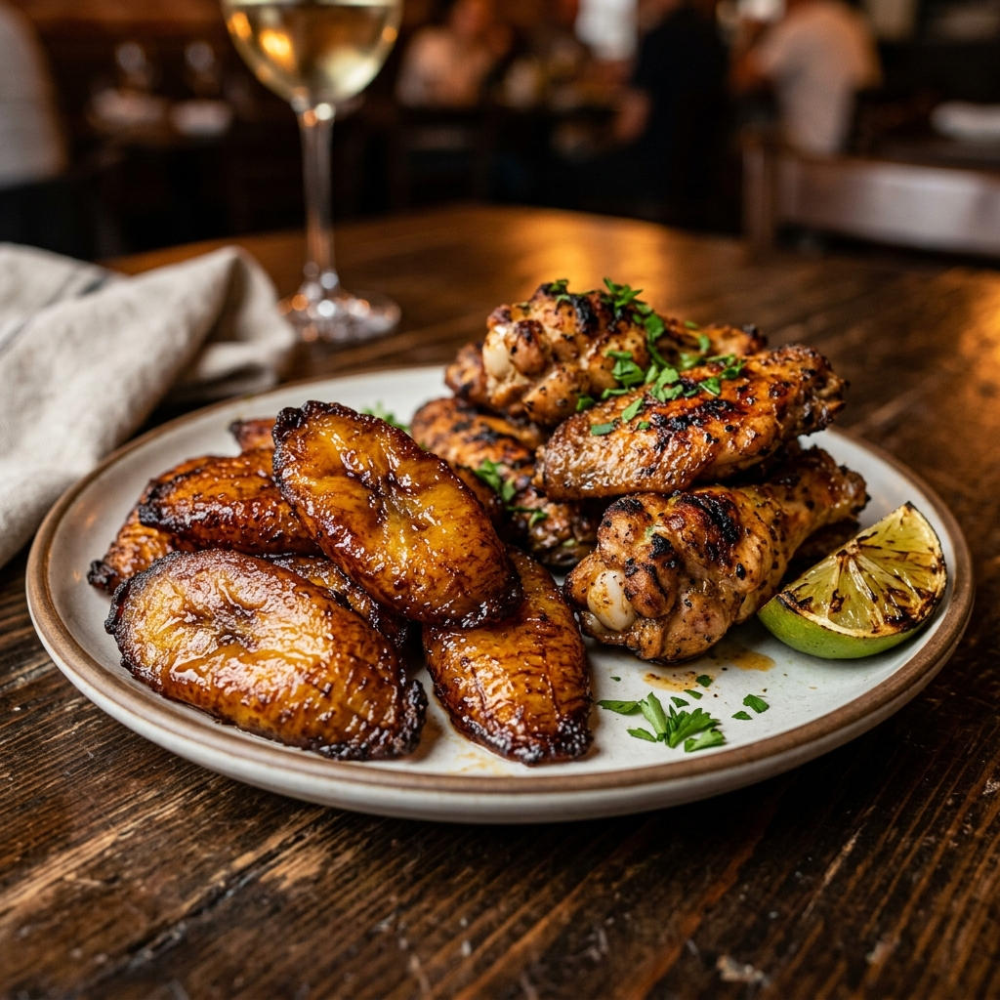

Our signature jollof rice — a West African classic cooked low and slow with tomatoes, peppers, and aromatic spices. Served with a golden-crisp chicken quarter and a generous side of sweet fried plantains.

A beloved Liberian staple — tender cassava leaves slow-simmered with turkey, chicken, shrimp, and beef in a rich, savory broth. Served with your choice of rice or fufu.

The heart of Liberian cuisine. Choose between traditional plantain fufu or organic cassava fufu, paired with a rich, aromatic soup loaded with turkey, chicken, shrimp, and beef.

Our showstopper — a whole red snapper seasoned with bold West African spices, cooked to crispy perfection. Served alongside golden sweet plantains. Made for sharing and savoring.

Sweet, caramelized fried plantains paired with our house special crispy chicken wings. A perfect combination of sweet and savory that keeps our guests coming back.